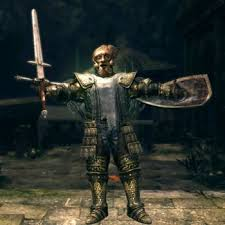
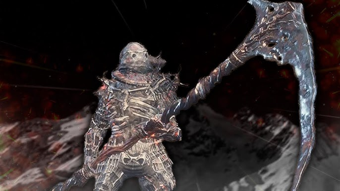
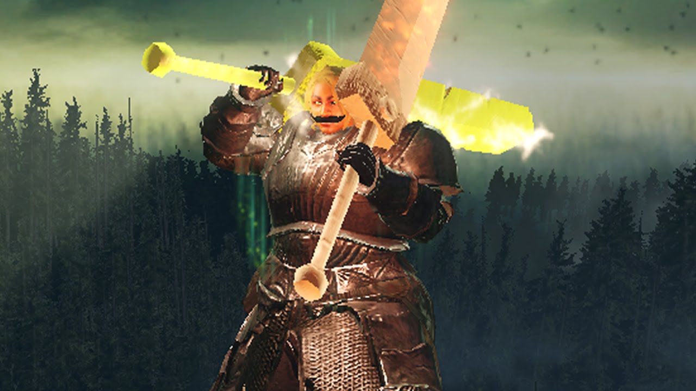
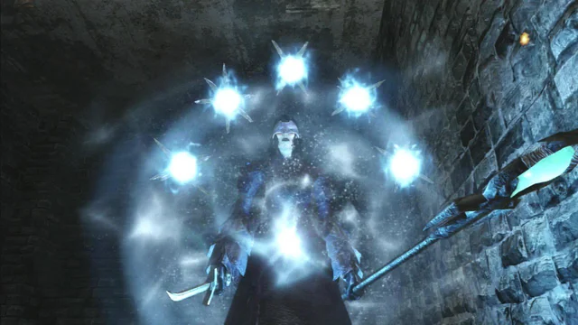
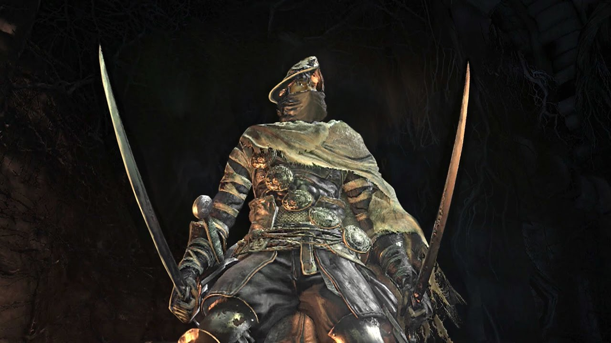
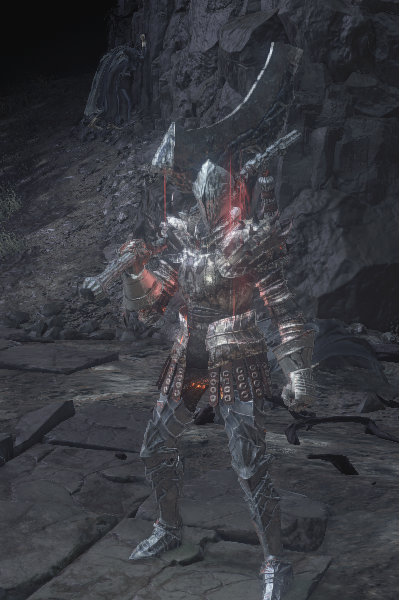

Builds: Dark Souls I
The GiantDad
Estilo: A build mais lendária do DS1. Focada em "Stun-lock" e defesa massiva para dominar o PvP de baixo nível.
Equipamento: Mask of the Father, Giant Armor Set, Chaos Zweihander +5.

Grande Foice (Dex Hyper-Carry)
Estilo: Dano de sangramento e alcance absurdo. Ideal para passar pelo jogo base com facilidade.
Equipamento: Great Scythe +15, Grass Crest Shield (nas costas), Dark Wood Grain Ring.

Builds: Dark Souls II
Power Stance Ultra GS
Estilo: Brutalidade pura. Usa a mecânica exclusiva do DS2 de empunhar duas armas colossais ao mesmo tempo.
Equipamento: Duas "Greatsword" (as Ultra Greatswords), Ring of Blades +2.

Hexer (Mago Negro)
Estilo: Mestre das Trevas. No DS2, os Hexes são extremamente poderosos, escalando com o menor valor entre Fé e Inteligência.
Equipamento: Sunset Staff, Hex: Dark Orb, Hex: Resonant Soul.

Builds: Dark Souls III
Mercenary Twinblades
Estilo: Velocidade insana. Provavelmente a build de maior DPS (dano por segundo) do jogo contra chefes.
Equipamento: Sellsword Twinblades (Sharp Infusion), Pontiff's Right Eye, Old Wolf Curved Sword (nas costas).

Lorde do Trovão (Str/Fth)
Estilo: Cavaleiro Pesado. Combina a força bruta com o poder dos raios para destruir defesas.
Equipamento: Dragonslayer Greataxe ou Lothric Knight GS, Lightning Blade (Miracle).
